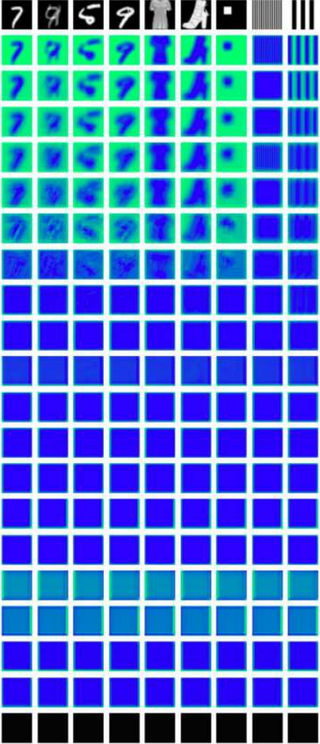
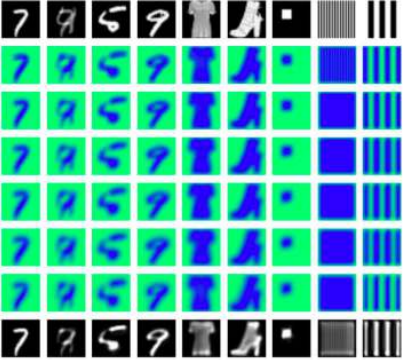
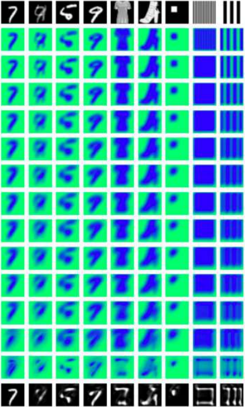
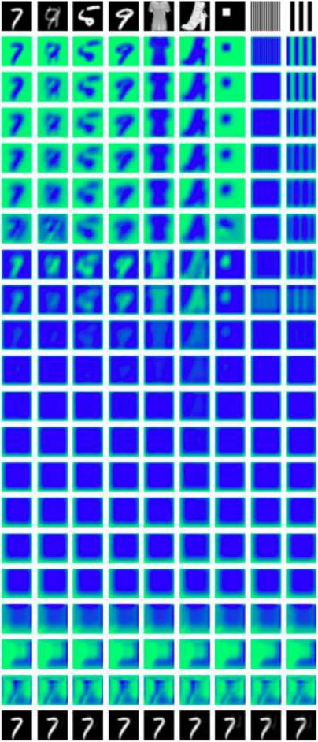

Random 20-layer
 Visualization of intermediate layers of CNNs with different numbers of layers.
Trained 7-layer
 Visualization of intermediate layers of CNNs with different numbers of layers.
Trained 14-layer
 Visualization of intermediate layers of CNNs with different numbers of layers.
Trained 20-layer
 Visualization of intermediate layers of CNNs with different numbers of layers.